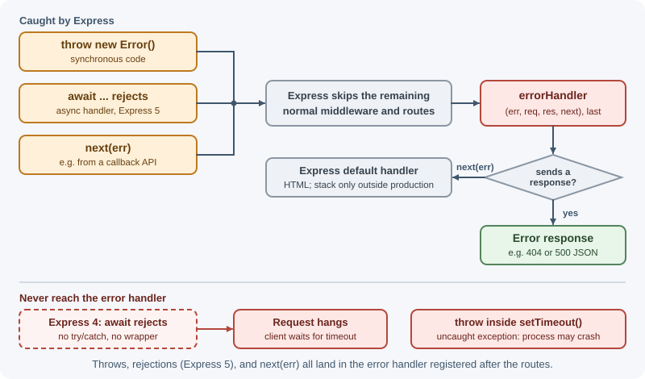
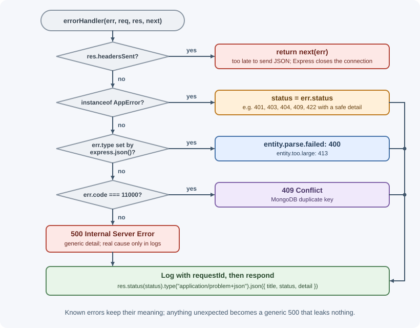

Error Handling in Express¶
Error handling in Express is about catching failures from any route or
middleware and turning them into consistent, safe HTTP responses in one
place. Express provides a default error handler, a way to forward errors
(next(err)), and special four-argument middleware for handling them.
Express 5 also catches errors from async handlers automatically.
Why it matters¶
Errors are inevitable: invalid input, missing records, expired tokens, database outages, and plain bugs. Without central handling, each route answers errors differently, some failures leak stack traces to attackers, and some unhandled async errors leave requests hanging. A single error handler gives clients a predictable error format, keeps internal details private, and makes sure every failure is logged. The general principles are in error handling concepts; this lesson covers the Express mechanics.
Real-world usage¶
- Zalando's public RESTful API guidelines say APIs "MUST support
problem JSON", the RFC 9457
application/problem+jsonformat used in this lesson, and "MUST not expose stack traces", because they "can leak sensitive information" and reveal vulnerabilities to attackers (Zalando RESTful API Guidelines). - Stripe returns a consistent error object with fields such as
type,code,message, andparam, and documents what each HTTP status means for its API: 2xx success, 4xx a problem with the request, 5xx a problem on Stripe's side (Stripe API errors). - GitHub documents its error responses by status, for example
400 Bad Requestwith "Problems parsing JSON" and422with "Validation Failed" plus anerrorslist (GitHub REST API troubleshooting). - Sentry's Express integration captures errors from routes and middleware automatically and, by default, skips errors with 3xx and 4xx status codes, "since they're usually expected redirects or client errors" (Sentry for Express). That is the operational-versus-programmer split this lesson describes.
Popular tools and providers: Sentry, Datadog, and OpenTelemetry-based
tools for error tracking; http-errors for creating errors with a
status.
How it works¶
How errors travel through Express¶

Synchronous errors¶
Errors thrown synchronously in a handler or middleware are caught by Express automatically:
app.get("/boom", (req, res) => {
throw new Error("Something broke"); // Express catches this
});
Asynchronous errors: Express 5 compared with Express 4¶
In Express 5, when a handler or middleware returns a promise that
rejects, Express calls next(err) with the rejection reason. async
functions return promises, so a failed await reaches the error handler:
// Express 5
app.get("/users/:id", async (req, res) => {
const user = await db.users.findById(req.params.id); // if this rejects...
res.json(user); // ...the error handler runs
});
In Express 4, the same code produces an unhandled promise rejection
and the error handler never runs. Since Node.js 15, an unhandled rejection
crashes the process by default, so one failing request takes down every
request on that instance; if an unhandledRejection listener keeps the
process alive, the client instead waits until it times out. Express 4
code must catch and forward the error itself:
// Express 4
app.get("/users/:id", async (req, res, next) => {
try {
const user = await db.users.findById(req.params.id);
res.json(user);
} catch (err) {
next(err);
}
});
// Or a small wrapper reused for every async handler
const asyncHandler = (fn) => (req, res, next) =>
Promise.resolve(fn(req, res, next)).catch(next);
Warning
Neither version catches errors thrown inside callbacks that run later,
such as setTimeout or old-style callback APIs. Those run outside the
promise Express is watching. Pass such errors to next(err) yourself,
or switch to promise-based APIs.
Forwarding errors with next(err)¶
Calling next with any value other than "route" or "router" marks the
request as failed:
app.get("/files/:name", (req, res, next) => {
fs.readFile(`uploads/${req.params.name}`, (err, data) => {
if (err) return next(err); // callback-style API: forward manually
res.send(data);
});
});
Error-handling middleware¶
Error handlers take four arguments, (err, req, res, next). Express
counts the function's declared parameters to tell an error handler from
normal middleware, so all four must be present.
Register them after all routes and normal middleware. Express looks for error handlers further down the list from where the error happened; one registered earlier never sees errors from later routes.
The 404 handler is not an error handler¶
A request that matches no route is not an error in Express's eyes: the chain simply ends. Add a normal middleware after all routes to answer 404, before the error handler:
app.use((req, res) => {
res.status(404).json({ error: `No route for ${req.method} ${req.originalUrl}` });
});
Express's default error handler¶
If no custom error handler responds, Express's built-in one does:
- Status:
err.statusorerr.statusCodeif it is a 4xx or 5xx code, otherwise 500. - Body: the error stack in development; only the status text (for example
"Internal Server Error") when
NODE_ENVisproduction. - Headers listed in
err.headersare added to the response. - If the response has already started (
res.headersSent), it closes the connection, because a status and headers can no longer be changed. - It also prints the error to standard error (except when the Express
environment is
test), even in production.
The default handler returns HTML, which is why APIs add their own JSON error handler.
Operational errors and programmer errors¶
| Operational errors | Programmer errors | |
|---|---|---|
| Meaning | Expected failures in a correct program | Bugs in the code |
| Examples | Invalid input, record not found, expired token, database timeout | undefined is not a function, wrong variable name, failed assertion |
| Response | A specific 4xx or 503 with a helpful message | A generic 500; details only in logs |
| Action | Handle and continue | Log, alert, and fix the code |
A custom error class marks operational errors so the handler can tell them apart.
Mapping errors to status codes¶
| Situation | Status |
|---|---|
| Malformed request, invalid JSON | 400 Bad Request |
| Valid JSON that fails validation | 422 Unprocessable Content (or 400 by convention) |
| Missing or invalid credentials | 401 Unauthorized |
| Authenticated but not permitted | 403 Forbidden |
| Resource does not exist | 404 Not Found |
| Duplicate or conflicting state | 409 Conflict |
| Body too large | 413 Content Too Large |
| Too many requests | 429 Too Many Requests |
| Unexpected bug | 500 Internal Server Error |
| Dependency unavailable | 503 Service Unavailable |
See HTTP status codes for every code.
A consistent error shape: problem details¶
RFC 9457, "Problem Details for HTTP APIs", defines a standard JSON error
format with the media type application/problem+json:
{
"type": "https://api.example.com/problems/insufficient-stock",
"title": "Insufficient stock",
"status": 409,
"detail": "Only 2 units of product p-9 are available.",
"instance": "/api/v1/orders"
}
type: a URI identifying the kind of problem (about:blankwhen you have nothing more specific).title: a short, human-readable summary of that problem type.status: the HTTP status code.detail: an explanation specific to this occurrence.instance: identifies this occurrence, often the request path.
You can add extension fields such as requestId or issues. Even if you
do not adopt the standard exactly, keep one shape for every error.
When to use and when not to use¶
Throw or next(err) an error when the request cannot be completed:
the record is missing, the user is not allowed, a dependency failed, or a
bug occurred. One handler then turns it into a consistent response.
Do not use errors for normal outcomes a client can expect, such as an
empty search result (return 200 with an empty list) or a successful
delete (204). Do not catch an error just to log it and return 200.
| Choice | Use when | Avoid when |
|---|---|---|
Custom error class (AppError) with status |
Expected failures you want to describe to clients | Wrapping every bug; unexpected errors should stay generic 500s |
application/problem+json (RFC 9457) |
Public or multi-team APIs that benefit from a standard shape | A small internal API with an existing shape that clients already rely on |
| Your own error JSON shape | Existing clients depend on it | Starting a new public API with nothing to stay compatible with |
| Crash and let the supervisor restart | Programmer errors outside the request cycle (uncaughtException) |
Operational errors such as a missing record or a bad request |
Practical examples¶
A custom error class¶
// errors/AppError.js
export class AppError extends Error {
constructor(status, title, detail, options = {}) {
super(detail, { cause: options.cause });
this.name = "AppError";
this.status = status; // HTTP status to send
this.title = title; // short, safe summary
this.isOperational = true; // expected failure, safe to describe
this.extra = options.extra; // e.g. validation issues
}
}
export const notFound = (what) => new AppError(404, "Not found", `${what} was not found`);
export const conflict = (detail) => new AppError(409, "Conflict", detail);
Throwing from routes and services¶
app.get("/api/v1/orders/:id", async (req, res) => {
const order = await orders.findById(req.params.id);
if (!order) throw notFound(`Order ${req.params.id}`); // Express 5 forwards it
if (order.customerId !== req.user.id) {
throw new AppError(403, "Forbidden", "You cannot view this order");
}
res.json(order);
});
The central error handler¶
// middleware/errorHandler.js
import { AppError } from "../errors/AppError.js";
const isProduction = process.env.NODE_ENV === "production";
export function errorHandler(err, req, res, next) {
// Response already started: let Express close the connection
if (res.headersSent) return next(err);
let status = 500;
let title = "Internal Server Error";
let detail = "An unexpected error occurred.";
let extra;
if (err instanceof AppError) {
({ status, title, extra } = err);
detail = err.message;
} else if (err.type === "entity.parse.failed") {
// From express.json(): the body was not valid JSON
status = 400;
title = "Bad Request";
detail = "Request body is not valid JSON.";
} else if (err.type === "entity.too.large") {
status = 413;
title = "Content Too Large";
detail = "Request body is too large.";
} else if (err.code === 11000) {
// MongoDB duplicate key
status = 409;
title = "Conflict";
detail = "A record with this value already exists.";
}
// Log everything server-side, with context for debugging
const logLevel = status >= 500 ? "error" : "warn";
console[logLevel]({
requestId: req.id,
method: req.method,
url: req.originalUrl,
status,
message: err.message,
stack: status >= 500 ? err.stack : undefined,
});
res
.status(status)
.type("application/problem+json")
.json({
type: "about:blank",
title,
status,
detail,
instance: req.originalUrl,
requestId: req.id,
...(extra && { issues: extra }),
// Never expose stack traces to clients in production
...(!isProduction && status >= 500 && { stack: err.stack }),
});
}
The handler checks the error in a fixed order, so known errors keep their meaning and anything else becomes a generic 500:

Wiring it together¶
// app.js
import express from "express";
import { errorHandler } from "./middleware/errorHandler.js";
const app = express();
app.use(express.json());
app.use("/api/v1", apiRouter);
// 1. Nothing matched -> 404
app.use((req, res) => {
res.status(404).type("application/problem+json").json({
type: "about:blank",
title: "Not Found",
status: 404,
detail: `No route for ${req.method} ${req.originalUrl}`,
});
});
// 2. Errors -> one consistent response (always last)
app.use(errorHandler);
export default app;
curl -i localhost:3000/api/v1/orders/999
# HTTP/1.1 404 Not Found
# Content-Type: application/problem+json; charset=utf-8
#
# {"type":"about:blank","title":"Not found","status":404,
# "detail":"Order 999 was not found","instance":"/api/v1/orders/999",...}
Errors outside the request cycle¶
Errors in timers, background jobs, or forgotten promises never reach
Express. Node.js reports them through the process-level
uncaughtException and unhandledRejection events. Log them and let the
process restart, because the application may be in an unknown state. See
errors, debugging, and performance.
Best practices¶
- Have exactly one central error handler, registered last, plus a 404 handler just before it.
- Throw (or reject with) error objects, never strings, so stacks are kept.
- Use a custom error class for expected failures with a status and a safe message.
- Return a generic message for unexpected 500 errors; keep details in logs.
- Never send stack traces, SQL, or internal paths in production.
- Include a request ID in error responses and logs so they can be matched.
- Delegate to
next(err)whenres.headersSentis true. - In Express 4, wrap async handlers or use
try/catchwithnext(err).
In production¶
- Stack traces in API responses. Symptom: a penetration test or bug
report shows file paths and stack frames in error responses. Detect:
error responses with
Content-Type: text/htmlcontainingat ...lines. Cause:NODE_ENVis notproduction, and errors reach Express's default handler, which then sendserr.stack. Fix: setNODE_ENV=productionand register your own JSON error handler. - The custom error handler never runs. Symptom: clients receive
Express's HTML error page instead of your JSON. Detect: error
responses lack your fields (
title,requestId). Cause: the handler was declared with three parameters, or registered before the routes. Fix: use exactly(err, req, res, next)and register it last. - Crash loops. Symptom: instances restart repeatedly and in-flight
requests fail. Detect:
uncaughtExceptionor unhandled-rejection stacks in the logs and rising restart counts in PM2 or Kubernetes. Cause: errors thrown in timers, event listeners, or (in Express 4) un-awaited async handlers. Fix: forward those errors withnext(err), move to promise-based APIs, and keep a process-level handler that logs and exits so the supervisor can restart cleanly. - Alert fatigue. Symptom: the on-call team ignores error alerts. Detect: most alerting errors are 401, 404, or 422 responses. Cause: client errors are logged and alerted like server failures. Fix: log 4xx at a lower level and alert on 5xx rates, as Sentry's default for Express already does for 3xx and 4xx.
- Empty or useless error bodies. Symptom: clients receive
{}for 500 errors. Detect: error responses with an empty object. Cause:res.status(500).json(err): anError's message and stack are not enumerable, soJSON.stringifydrops them. Fix: build the response body explicitly from safe fields.
Important terminology¶
- Error-handling middleware: A function with the signature
(err, req, res, next)that turns errors into responses. - Default error handler: Express's built-in handler used when no custom handler responds.
- Operational error: An expected failure in a correctly working program.
- Programmer error: A bug that should be fixed rather than handled.
- Problem details: The RFC 9457 standard JSON format for HTTP API errors.
- Unhandled rejection: A rejected promise with no handler attached.
Common mistakes and misconceptions¶
- Declaring the error handler with three parameters, so Express treats it as normal middleware.
- Registering the error handler before the routes.
- Using
asynchandlers in Express 4 without catching errors, which crashes the process on modern Node.js (or leaves requests hanging). - Expecting the error handler to catch errors thrown inside
setTimeoutor other callbacks. - Treating a missing route as an error instead of adding a 404 handler.
- Sending
res.status(500).json(err), which can leak internals (and often serializes to{}). - Catching errors in a route, logging nothing, and returning 200.
Revision questions¶
- Which kinds of errors does Express 5 catch automatically, and which does it not?
- How does Express recognize error-handling middleware, and where must it be registered?
- Why is a 404 handled by normal middleware rather than the error handler?
- What is the difference between operational and programmer errors, and how should each be answered?
- What are the standard fields of a problem details response?
- Why should the handler check
res.headersSent?